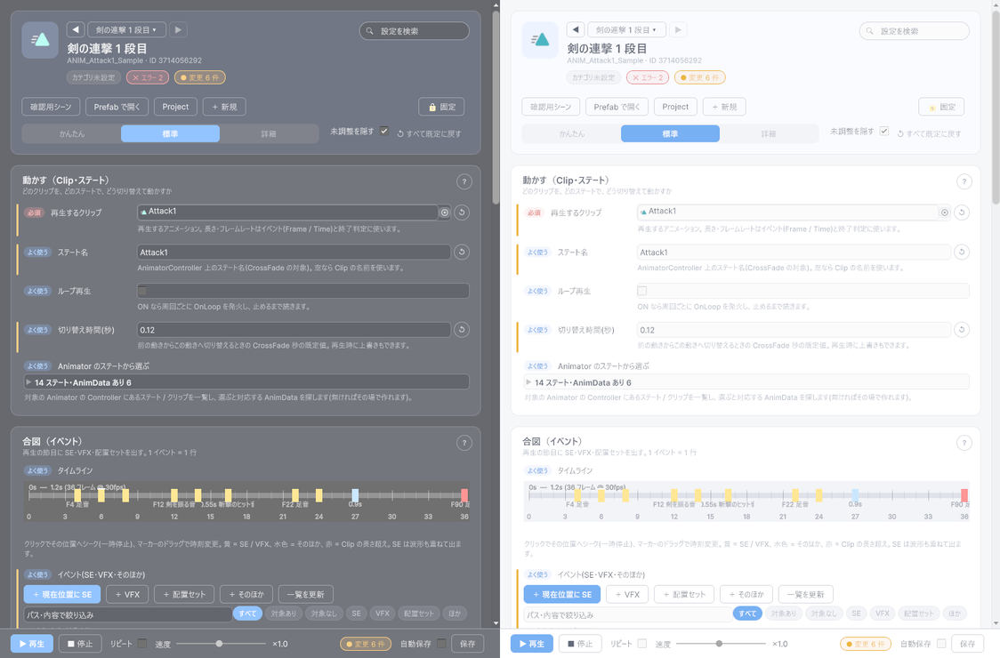
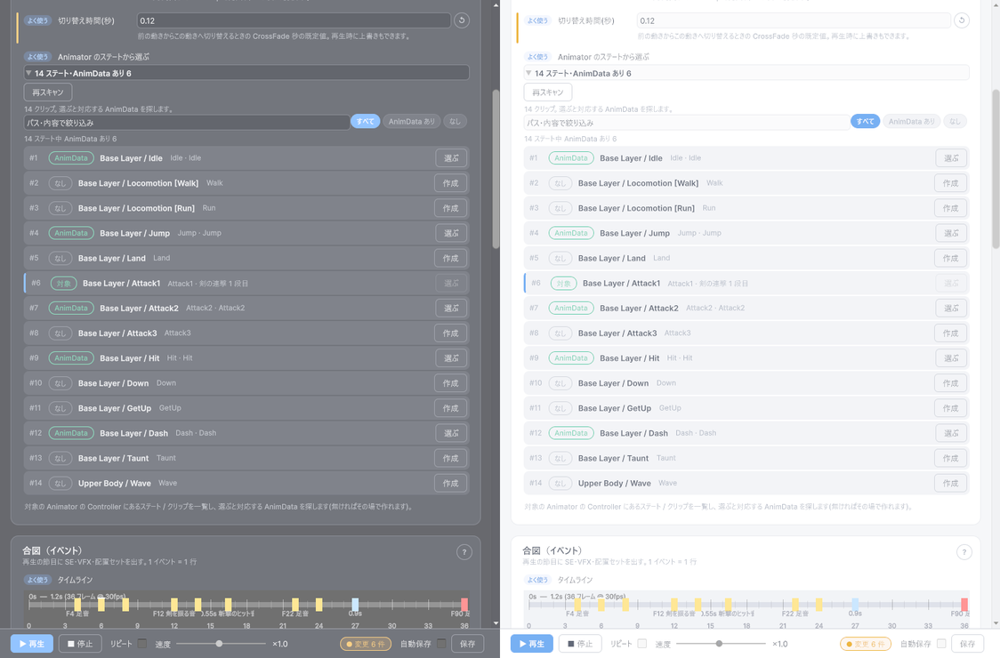
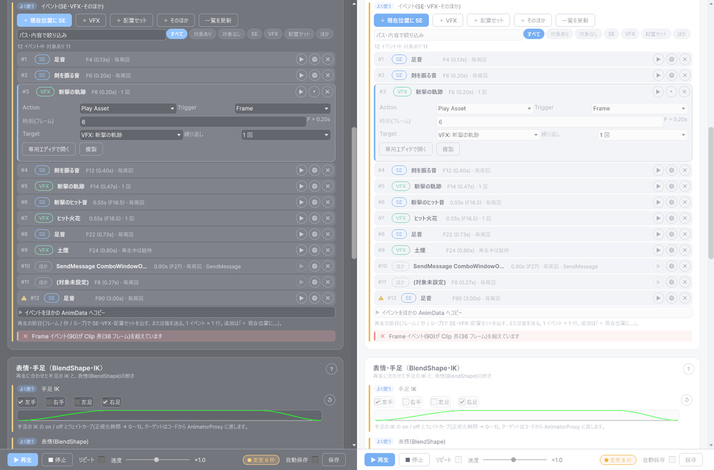
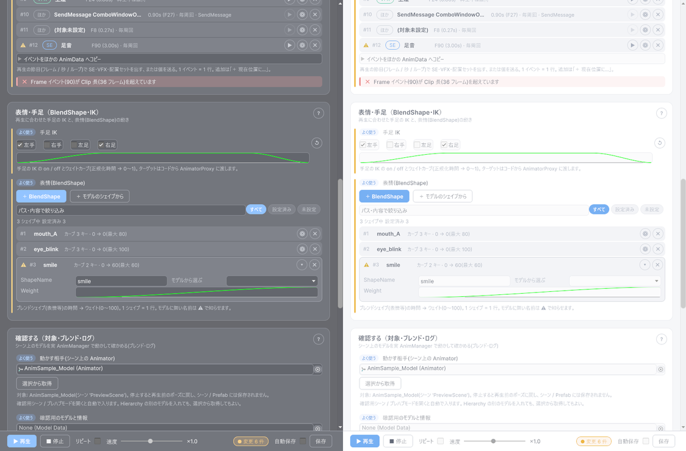
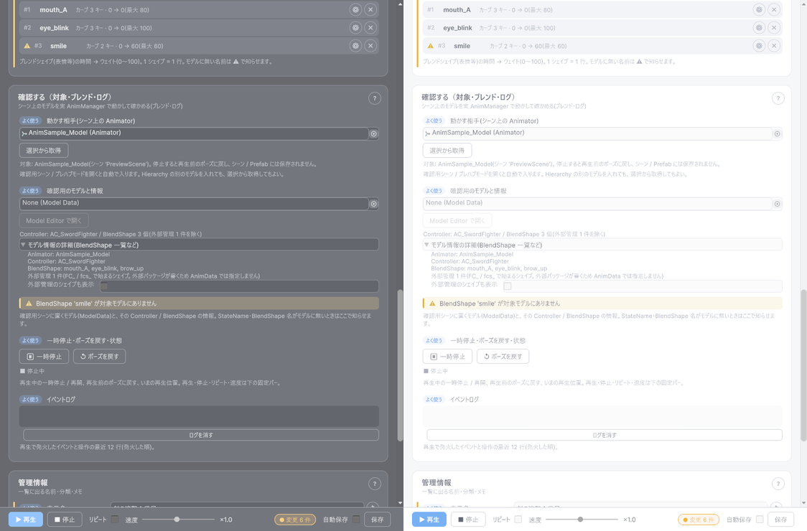

最終更新日: 2026-10-13
アニメーションデータ（AnimData）は「この Clip を、このステートで、いつ効果音・エフェクトを出しながら再生するか」をまとめたものです。基本の動き（待機・歩き）は Animator Controller に持たせ、攻撃・被弾などのワンショットを D-Drive のアニメーションデータで再生します。
Tools > D-Drive > Editors > Animation (3D)。Project でアニメーションデータを選ぶと自動で入ります。何も選んでいないときは、ウィンドウの真ん中の枠にドロップするか、最近使ったものから選びます
Anim.Play(ANIMID.Attack01, animator) と書くだけです。音やエフェクトのタイミングはデータ側で何度でも直せます。
| 部品 | 説明 |
|---|---|
| ◀ ▶ と名前のボタン | 同じカテゴリのアニメーションデータを順に切り替えます。名前のボタンで最近使ったものも選べます。 |
| 設定を検索 | 欄の名前・説明・検索語に加えて、イベント・表情・ステートの名前にも一致する設定だけを出します（例: SE / 表情 / Walk）。×で解除。 |
| エラー・警告・変更のチップ | 検証の結果と、まだ保存していない変更の数。変更のチップを押すと「変更した設定だけ」を表示します。 |
| 確認用シーン | 確認用シーンを開き（無ければ生成）、確認用のモデルを置いて動かす相手にします。右クリックで、いま開いているシーンにそのまま置く / 本配置にもできます。 |
| Prefab で開く | 確認用モデルの Prefab をプレハブモードで開きます。その Prefab のモデルが動かす相手になります（下記）。 |
| Project / ＋ 新規 | 対象を Project ウィンドウでハイライト / 新しいアニメーションデータを作ってこのエディターで開く。 |
| 固定 | ON にすると、Project ウィンドウで別のものを選んでも対象が切り替わりません。 |
| かんたん / 標準 / 詳細 | 見せる欄の量。かんたん=必須の欄だけ（再生するクリップ）/ 標準=普段触る欄まで / 詳細=すべて（レイヤー・マスク・動作の取り決め・ブレンド確認）。 |
| 未調整を隠す | 詳細モードで、既定値のままの設定をカードごとの「未調整の設定」に折りたたみます。 |
| ↺ すべて既定に戻す | 既定値と違う設定をすべて既定に戻します（確認あり。管理情報は対象外）。各欄の右の ↺ でその欄だけ戻せます。 |
| 操作 | 説明 |
|---|---|
| ▶ 再生 / ■ 停止 | ゲームを実行せずにその場で再生。SceneView を見てください。再生中の ▶ は最初からやり直します。■ 停止はその瞬間のポーズのまま止まり、前に出した音・エフェクト・配置セットは消えます。 |
| リピート | ON にすると、終わるたびに自動でもう一度再生します（何度も ▶ を押さなくてよい）。 |
| 速度 | 再生速度（0.1〜2 倍）。右の「×1.0」を押すと等倍に戻ります。 |
| 変更 N 件 / 保存 | まだ保存していない変更の数。「保存」でアセットに書き込みます（保存のたびに版数が進みます）。ウィンドウを閉じる・別のものに切り替えるときも、未保存なら確認が出ます。 |
| 自動保存 | ON にすると、編集が止まって 1 秒たつと自動で保存します。 |
Ctrl+Z / Ctrl+Y で戻せます。ウィンドウの値・イベントの並びが一緒に戻ります。
どのクリップを、どのステートで、どう切り替えて動かすか。
| 項目 | 説明 |
|---|---|
| 再生するクリップ | 再生するアニメーションクリップ（必須）。長さとフレームレートはイベントの位置と終了判定に使います。未設定は Error |
| ステート名 | Animator Controller 上のステート名。空なら Clip の名前を使います。対象のモデルの Controller に無い名前だと、「確認する」カードに Error が出ます（再生自体は止まらず、イベントだけ動きます） |
| ループ再生 | ON で周回し続ける（止める指示があるまで）。周回ごとに OnLoop イベントが出て、Frame / Time のイベントも毎周出ます |
| 切り替え時間（秒） | 前のモーションからこのモーションへ切り替わるときの混ざり秒数（CrossFade）。0.1 くらいが自然。2 秒を超えると警告 |
| レイヤー / アバターマスク / 動作の取り決め（詳細） | レイヤー番号（上半身用などは 1）、上半身だけ等のマスク（情報用。実際の適用は Controller のレイヤー設定）、使い回し・ポーズ・ネットの取り決め |
動かす相手の Controller にあるステートが1 ステート（クリップ）= 1 行で並びます（見出しは「14 ステート・AnimData あり 6」のように件数だけ。押して開きます）。

再生の節目に、効果音・エフェクト・配置セットを出します。
フレームごとの目盛り（太い目盛りにはフレーム番号）と再生ヘッドが出ます。
1 イベント = 1 行です。行は「#番号・種類のチップ（SE / VFX / 配置セット / ほか）・対象の名前・「F12 (0.40s) · 毎周回」の 1 行要約・▶ 試聴・⚙・✕」。⚙ で開くのはその行だけです。一覧の上の「検索」と「対象あり / 対象なし」・種類のチップで絞り込めて、件数（「12 イベント中 対象あり 11」）も出ます。20 行を超えると、一覧の中だけがスクロールします。
| Trigger | いつ出るか |
|---|---|
| Frame / Time | Clip の何フレーム目 / 何秒 |
| OnSpawn / OnLoop / OnDisable / OnDestroy | 再生開始 / 周回 / 止まった・中断された / 最後まで再生した |
| Custom | プログラムからの合図（CustomKey） |
Action は PlayAsset（SE / VFX / 配置セットを出す）のほか、SetParam（値を送る）・SendMessage・Duck（ほかの音を下げる）があります。PlayAsset 以外は「ほか」のチップで一覧に並び、⚙ の Target / Param を設定します。

| 項目 | 説明 |
|---|---|
| 手足 IK | 使う手足（左手 / 右手 / 左足 / 右足）にチェックし、ウェイトのカーブ（時間 0〜1 → 強さ 0〜1。空なら常に 1）を決めます。IK の目標位置はプログラム側で設定します |
| 表情（BlendShape） | 1 シェイプ = 1 行。行の ⚙ で ShapeName と、時間（0〜1）→ ウェイト（0〜100）のカーブを決めます。「＋ BlendShape」で空の行、「＋ モデルのシェイプから」でモデルが持つ名前から選んで追加できます |
FC_ / fcs_ で始まるシェイプは外部のツールが管理するため、モデル情報の一覧から隠れ、行に指定すると警告が出ます
| 項目 | 説明 |
|---|---|
| 動かす相手（シーン上の Animator） | 確認用シーン / モデル Prefab を開くと自動で入ります。「選択から取得」で Hierarchy の選択（またはプレハブモードのルート）の Animator を入れることもできます。シーンに置いてある自分のキャラクターを動かしたいときもこれです。「↺ ポーズを戻す」か対象の切り替えで元のポーズに戻ります |
| 確認用のモデルと情報 | 確認用シーンに置くモデル（Animator を持つ ModelData）。「Model Editor で開く」でモデルの設定へ。1 行の要約（Controller 名 / BlendShape の数）と、「モデル情報の詳細」（BlendShape の一覧など）。ステート名・BlendShape 名がモデルに無いときは、ここに警告・エラーで出ます |
| 一時停止・ポーズを戻す・状態 | ⏸ は音・エフェクトも一緒に止まり、もう一度押すと続きから再開します（再生していないときに押すと最初から再生）。「↺ ポーズを戻す」で再生前のポーズに。状態の行に再生位置（フレーム・周回数）が出ます |
| ブレンド確認（詳細） | 3 つの確認ができます（下記）。どれもモデルを動かして見るだけで、データは変わりません |
| イベントログ | 再生中に発火したイベント・操作の最近 12 行（発火した順）。狙った位置で鳴っているかの確認に |
詳細モードの「ブレンド確認」には、既定で畳まれた 3 つの節があります。
| 道具 | 使い方 | 見えるもの |
|---|---|---|
| 遷移シーケンス | 「＋ Step」で次に再生したいアニメーションを並べ、Step ごとに CrossFade 秒と「前のモーションのどこで切り替えるか（切替位置、0.5 = 半分、1 以上 = 終わってから）」を決めて「▶ シーケンスを再生」。ループを ON にすると繰り返します | 攻撃 1 → 攻撃 2 → 構え直し、のようなつながりが自然か。CrossFade が短すぎてカクつかないか |
| レイヤー同時再生 | 「＋ Anim」で上半身用（Layer が 1 のアニメーションデータ）などを入れて「▶ 対象と一緒に再生」。Controller のレイヤーごとにスライダーが出るので、動かしながら見ます | 走りながら手を振る、などの重ね合わせ。AvatarMask（上半身だけ等）が効いているか |
| Blend Tree パラメータ | 横軸・縦軸に Controller のパラメータ（Speed、Direction など）を選び、パッドをドラッグ。1 つずつならスライダー、Bool / Int / Trigger もここで操作できます | 歩き↔走り、前後左右の混ざり方。境目で足が滑らないか |

上の「Prefab で開く」でプレハブモードに入ると、その Prefab のモデルが自動で動かす相手になります。BlendShape や IK の見え方を Prefab を編集しながら確認できます。■ 停止してもポーズはそのまま残るので、止めた絵を見ながら Prefab を直せます。Prefab でもシーンでも、保存（Ctrl+S）の直前に自動で再生前のポーズへ戻してから保存するので、再生中の姿勢が Prefab やシーンに入ることはありません。確認用シーンに置いたモデルは [D-Drive] Anim Preview として Hierarchy に出ますが、シーンには保存されません。
一覧に出る名前・カテゴリ・説明・タグ・担当者・仕様書 URL・変更メモ。ID・版数・最終更新者・最終更新日時は読み取り専用です。
該当する欄の下に、エラー・警告がそのまま出ます（欄に当てはまらないものは「その他の検証」）。「修正」ボタンがあるものはそれで直せます。
| やりたいこと | 設定 |
|---|---|
| 攻撃の当たるフレームで音とエフェクト | イベントに Frame=当たるフレーム、PlayAsset、Target=SE の行と Target=VFX の行を 1 つずつ |
| 足音（歩きループ） | ループ再生 ON。Frame=左足着地 と Frame=右足着地 の 2 行に足音 SE。周回ごとに鳴ります |
| モーションの最後に構え直しの音 | Trigger=OnDestroy に SE（最後まで再生したときだけ鳴る。途中で別のモーションに切り替わったときは鳴らない） |
| 叫び顔（表情） | 表情に ShapeName と、0→100→0 のカーブ |
| ダッシュ中ずっと出る土煙 | ループ再生 ON のダッシュモーションに、ループする VFX を「再生中は維持」で 1 行。1 回出て走っている間付いていき、モーションが終わると消えます |
| 方向違いの 4 クリップに同じ音 | 1 つに付けてから「同じステートの他クリップの AnimData へ一括コピー」 |
| 表示 | 対処 |
|---|---|
| Clip が未設定(または Missing)です | Clip を設定する |
| Frame イベント(…)が Clip 長(… フレーム)を超えています | マーカーが赤になっています。Clip の長さより手前にドラッグ（Clip の最後のフレームちょうどは OK です） |
| StateName '…'(Layer 0) が対象モデルの Controller にありません | Controller のステート名を確認して合わせる。空にすれば Clip 名が使われます |
| BlendShape '…' が対象モデルにありません | モデル情報に出ている名前から選び直す |
| BlendShape '…' は外部パッケージが管理するシェイプです | FC_ / fcs_ で始まるシェイプは外部のツールが重みを書くため、表情から行を消す（通常のシェイプを使う） |
| Loop=false ですが OnLoop イベントがあります | ループしないので鳴りません。ループ再生を ON にするか行を消す |